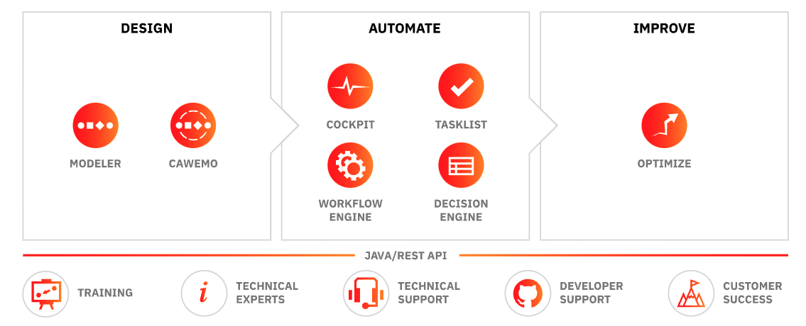
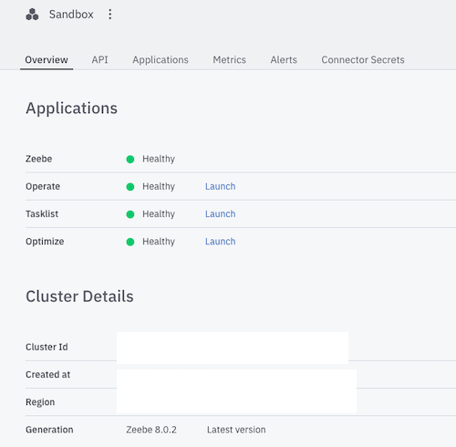
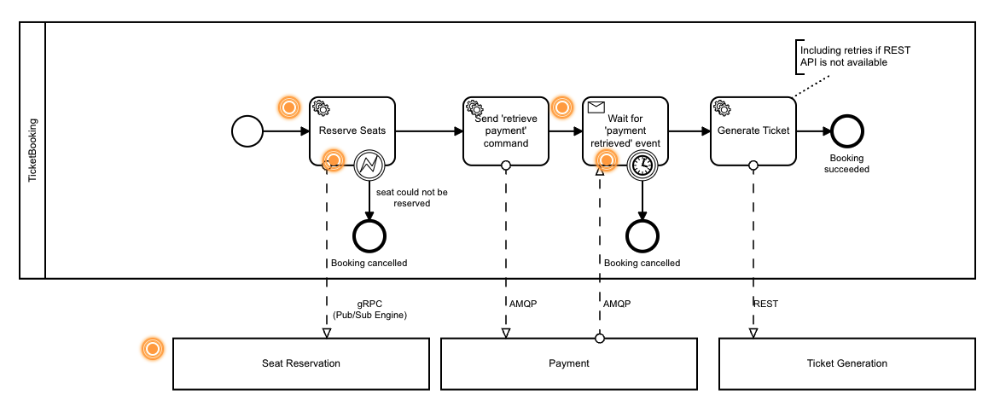
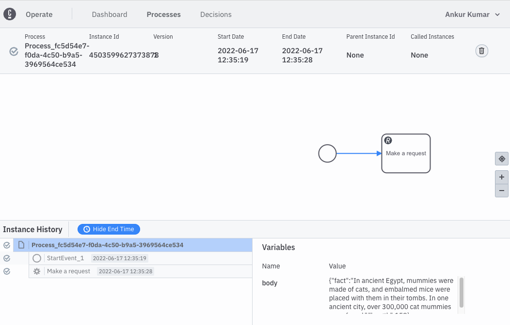
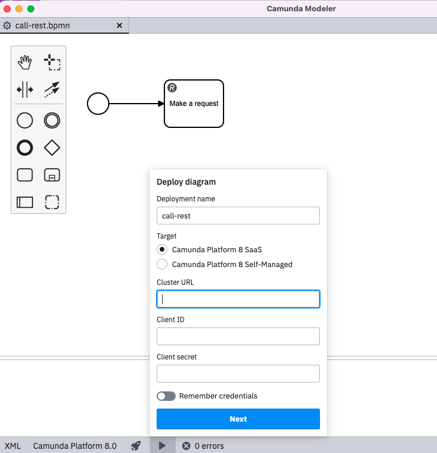
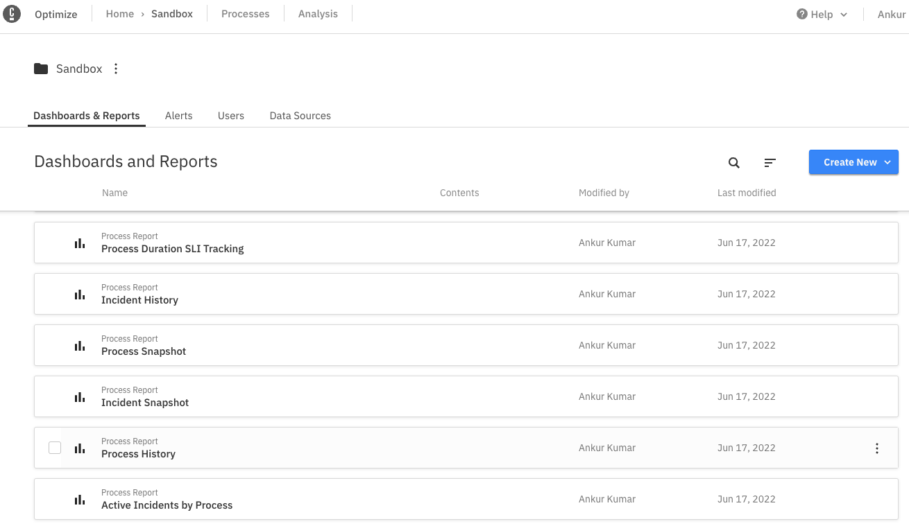
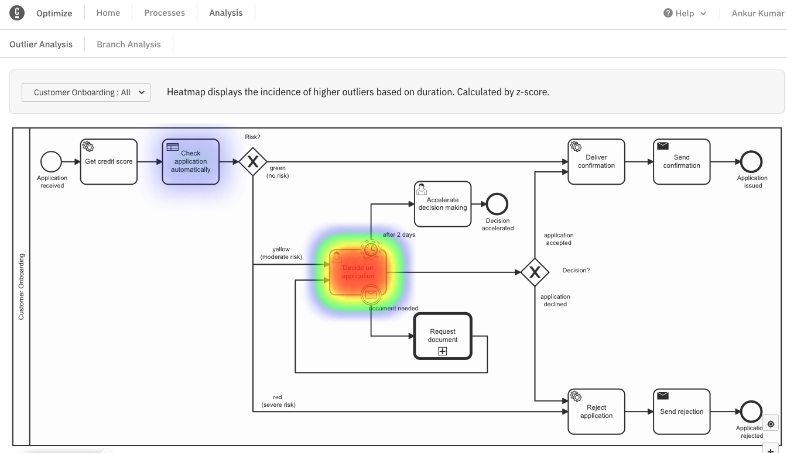
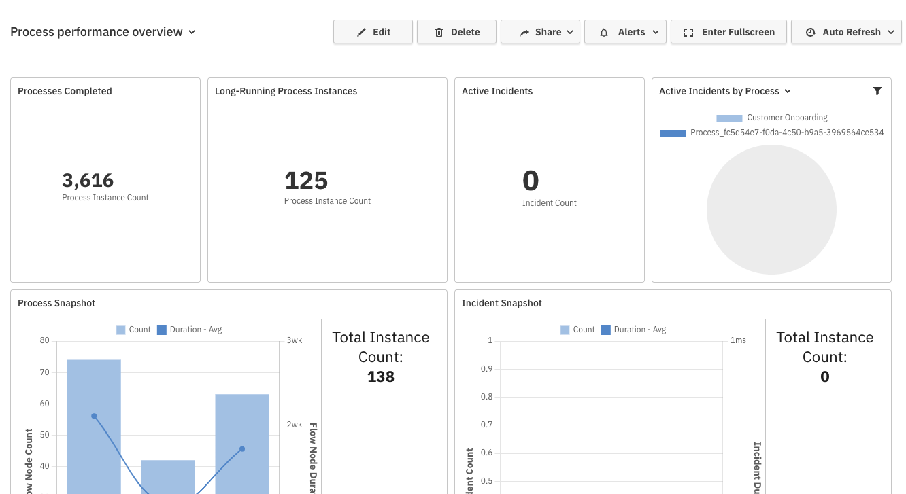

Camunda #
- Camunda describes itself as a universal process orchestrator. The most recent version is Camunda Platform 8.
- A workflow management solution based on BPMN and DMN based modeling framework.
- It supports both self-managed PaaS-based deployment and SaaS-based deployment model.
- Underlying architecture is using Microservices & Cloud-native oriented architecture replacing traditional Traditional business process management suites (BPM) systems.
- Camunda has Opensource Modeler (as a desktop app & web), Opensource community edition. See comparison with enterprise edition by clicking here.
- Key offerings of Camunda Platform 8 are documented here
- Horizontal scalability, high availability, and fault tolerance (with SaaS Model & On-premises/Hybrid Cloud as a separate option)
- Audit trail of workflows (events-driven)
- Reactive publish-subscribe interaction model, Visual processes modeled in ISO-standard BPMN 2.0, and Language-agnostic client model.
Applicability #
- Business-process automation examples such as:
- Financial Services: Automated KYC process for client onboarding (Bank), client engagement process automation
- Any human-task orchestration
- Orchestrating Microservices
- RPA Bots Orchestration
- Build a Centralized Process Automation Platform. Read here.
Architecture #
- Overall Technology Stack: Java, Spring Boot, Kafka, gRPC (Zeebee components communication), GraphQL (used by Tasklist), ELK (logs for Zeebee and others)
- Camunda 7 was Java EE & Spring Boot based and Camunda 8 has been reengineered towards cloud-native and microservices.
- GitHub Repository: https://github.com/camunda
- Platform Components: Zeebe, Modeler, Operate, Tasklist & Optimize.
- Modeler: Modeling following BPMN/DNM standards visually (web & desktop app)
- Zeebee as a cloud-native BPMN Workflow Engine.
- Decision Engine: using DNM as standard.
- Tasklist: for managing human tasks. Tasklist is a ready-to-use application to rapidly implement business processes alongside user tasks in Zeebe.
- Operate: for monitoring real-time, analyze/resolve issues. Operate is a tool for monitoring and troubleshooting process instances running in Zeebe.
- Optimize: for insights into the workflow with visual reports, heatmap, etc.
 Image Source: https://camunda.com/platform-7/
-
Zeebee Architecture:

-
Read about Camunda platform reference architecture by clicking here:
-
Camunda Process Engine is built using Spring Boot. It supports embedded deployment (as a library) or container-managed as an independent container, or standalone process engine server deployed in VM. Docker image is available at their registry built using Harbor.
-
Camunda recommends Oracle or PostgreSQL for production and H2 for development. It supports MySQL, MariaDB, IBM DB2, Amazon Aurora, Azure SQL, SQL Server, and CockroachDB as well
Access/Setup #
-
Trial: SaaS is available as a free account with collaborative modeling features for unlimited BPMN/DMN models.
-
Register to access Camunda Console for 1 month trial period
-
Camunda Console is available as a free account (trial): 
-
Installed Camunda Modeler (available as Opensource)
Sample Applications #
- Create a Microservices orchestration flow using the modeler like below: 
- You can also use their CLI interface:
zbctl create instance "order-process"
- Created a simple process to call a REST endpoint: 
- More code examples are available here: https://github.com/camunda/camunda-bpm-examples
- Connect your local desktop setup with cloud as shown below for deployment: 
Screenshots #
- Optmize dashboard listing all created dashboards (ready-made available) 
- Optimize Heatmap displays the incidence of higher outliers based on duration. Calculated by z-score.  